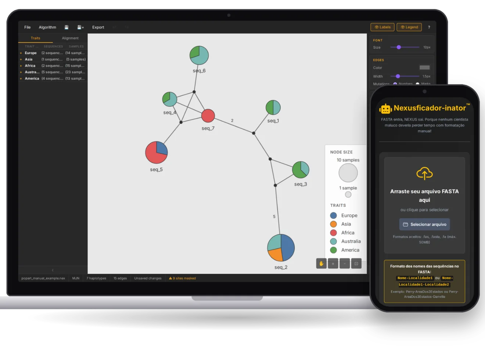

Haplotificador-inator & Nexusficador-inator
My Computer Science thesis: PopART, the population-genetics desktop app, rebuilt to run entirely in the browser.
It infers and draws haplotype networks with four algorithms (MSN, MJN, TCS and IntNJ) and matches PopART's output on the tested datasets, with interactive editing, PNG/SVG/PDF export, autosave and undo/redo. Its companion tool turns FASTA sequences into the NEXUS files the network reads, detecting haplotypes and sampling locations along the way.
Haplotificador: Live app
Repository
Nexusficador: Live app
Repository